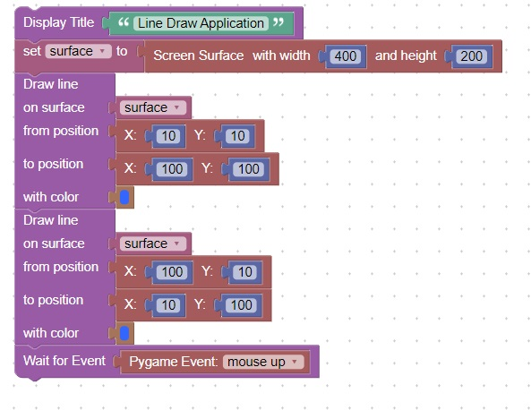
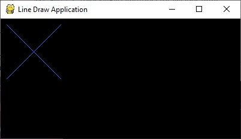

<h1>Draw Lines</h1>
<h2>New Concepts</h2>
   <table border="2px solid">
     <tr><th>Name</th><th>Description</th></tr>
     <tr><th>Draw Line</th><th>Lines can be drawn on the screen</th></tr>
   </table>
<h2>Code</h2>
This code will draw 2 lines in blue.<br>
The window will close when the mouse is released<br>
<br>
Here is what the screen looks like<br>
<br>
<hr>
<center></center>